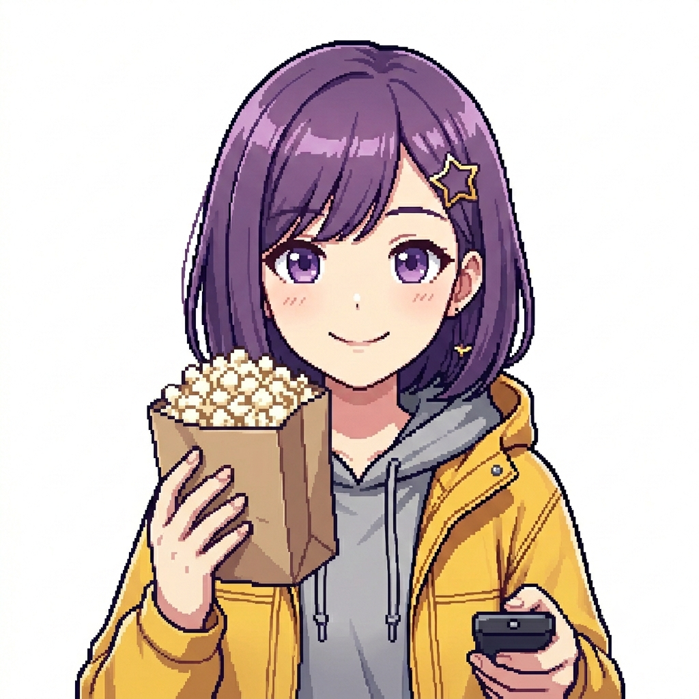

Meu primeiro post
Por: Keytin Shadday Díaz Crespo
Boas-vindas ao meu novo blog! Aqui vou compartilhar análises, indicações e curiosidades sobre personagens e enredos que fazem sucesso pelo mundo todo.
Vou compartilhar conhecimentos sobre animes e séries

Por: Keytin Shadday Díaz Crespo
Boas-vindas ao meu novo blog! Aqui vou compartilhar análises, indicações e curiosidades sobre personagens e enredos que fazem sucesso pelo mundo todo.

Por: Keytin Shadday Díaz Crespo
Se você gostou da proposta do blog e quer ficar por dentro de todas as análises, novidades e informações sobre o mundo dos animes e séries, clique no coração aqui embaixo! O feedback de vocês é o que faz o blog crescer.

Por: Keytin Shadday Díaz Crespo
Hoje vamos falar sobre meu anime favorito, Attack on Titan!
Escrito e ilustrado por Hajime Isayama, Attack on Titan (Shingeki no Kyojin) revolucionou a indústria da animação japonesa na última década. A história começa com a humanidade isolada dentro de três grandes muralhas protetoras para se salvar de gigantescos seres devoradores de homens: os Titãs.
O que parecia ser apenas uma narrativa de sobrevivência logo se transforma em um thriller geopolítico complexo, cheio de reviravoltas sobre liberdade, preconceito, ciclos de ódio e escolhas morais cinzentas. Com personagens inesquecíveis como Eren Yeager, Mikasa Ackerman e o Capitão Levi, a obra desafia quem está assistindo a escolher um lado certo. É, sem dúvidas, uma obra-prima moderna que prende do primeiro ao último episódio.
![Fotografia em perspectiva de primeira pessoa mostrando uma mão com luva cirúrgica branca apontando um controle remoto para uma televisão antiga de tubo. Na tela da TV, brilha o logotipo vermelho de 'Stranger Things'. Em cima da mesa de madeira, há um saco de pipocas, um crachá de identificação do Laboratório Nacional de Hawkins e uma estátua do monstro Demogorgon. Ao fundo, uma estante de madeira decorada com pôsteres da série, uma lancheira de Dungeons & Dragons, uma caixa de waffles Eggo e uma bicicleta retrô azul.](imagem quatro-blog.png)
Por: Keytin Shadday Díaz Crespo
Vocês viram sobre a série Stranger Things? Se ainda não assistiram, precisam correr para ver! Essa produção da Netflix é simplesmente fantástica e te prende do início ao fim.
Tudo começa nos anos 80, na pequena cidade de Hawkins, quando um garoto chamado Will desaparece misteriosamente. Enquanto seus amigos e a polícia tentam procurá-lo, eles acabam descobrindo experimentos secretos do governo, portais para uma dimensão sombria conhecida como "Mundo Invertido" e uma garota superpoderosa com um passado misterioso chamada Eleven.
A série mistura perfeitamente suspense, ficção científica, monstros assustadores e aquela vibe nostálgica maravilhosa com uma trilha sonora incrível de rock clássico e sintetizadores. É o tipo de produção que faz você maratona sem parar para descobrir os mistérios junto com as crianças. Vale muito a pena dar uma chance!
Deixem nos comentários de qual série vocês querem que eu fale no próximo post!